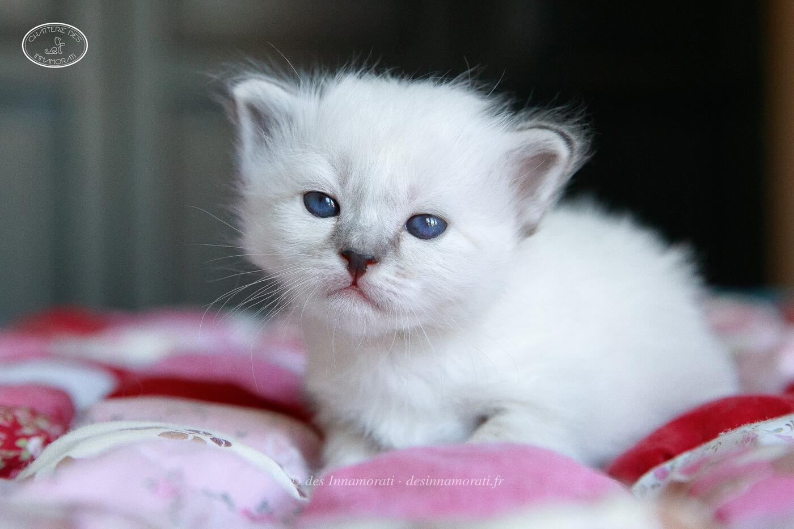
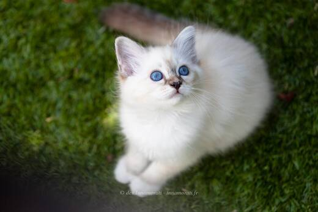
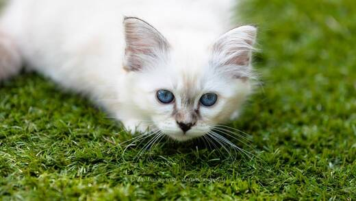
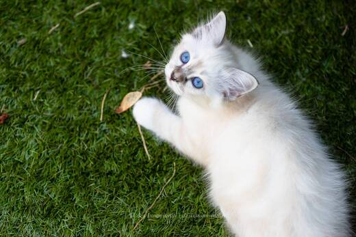
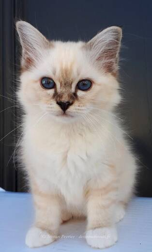
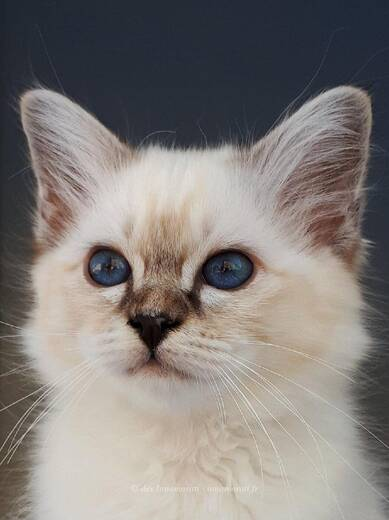
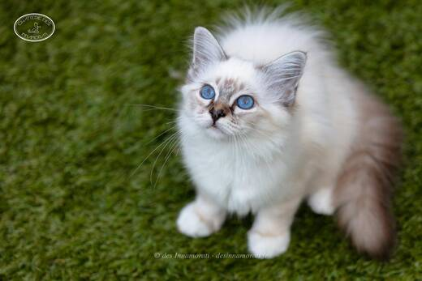
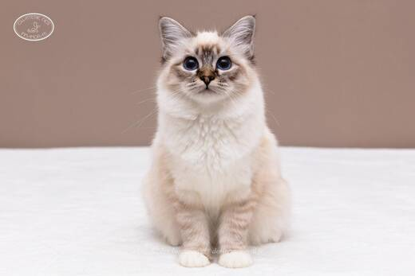
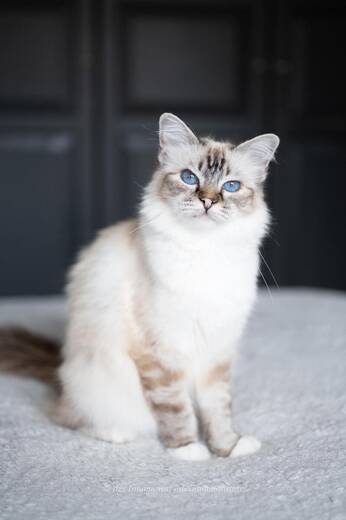

RobeFemelle · Seal tabby point
Naissance19 juin 2018
StatutRetraitée en famille
Album18 photos, de juillet 2018 à mai 2020

















Palmarès
3 expositions · 6 jugements2019
- CastetsCAC
- CastetsEXC2 CAC
- ParisEXC1 · NOM
- ParisEXC2
2018
- MarsacEXC1
- MarsacEXC2
EXC Excellent (classement) · CAC, CACIB, CAGCIB, CACS certificats de champion, champion international, grand champion international et suprême · CAP, CAPIB, CAGPIB, CAPS équivalents pour les chats stérilisés · BIV meilleur de la variété · NOM nommé pour le Best in Show · BIS Best in Show · BOB Best of Best, le meilleur de toute l’exposition
Photos réduites et marquées. Elles appartiennent à la Chatterie des Innamorati et ne peuvent pas être reprises dans une annonce.